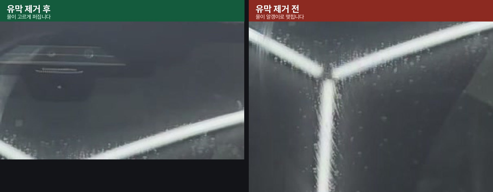
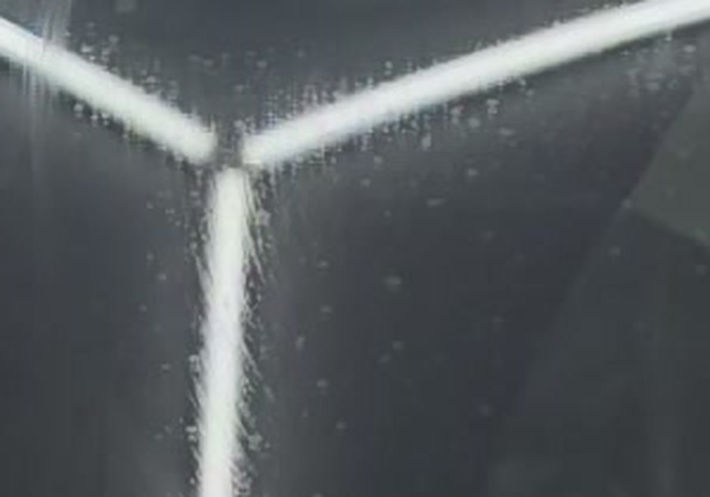
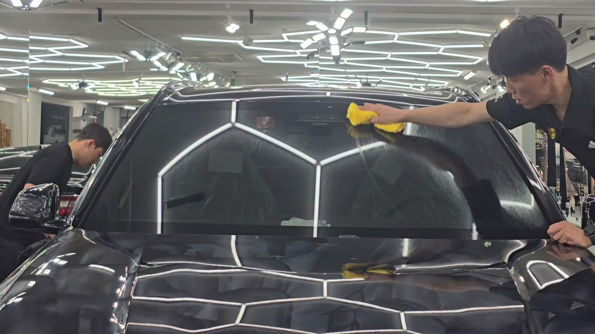
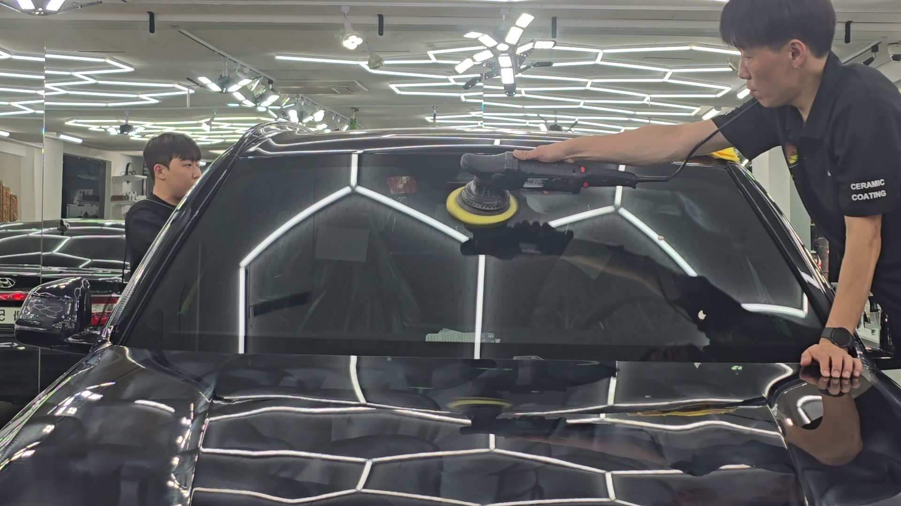
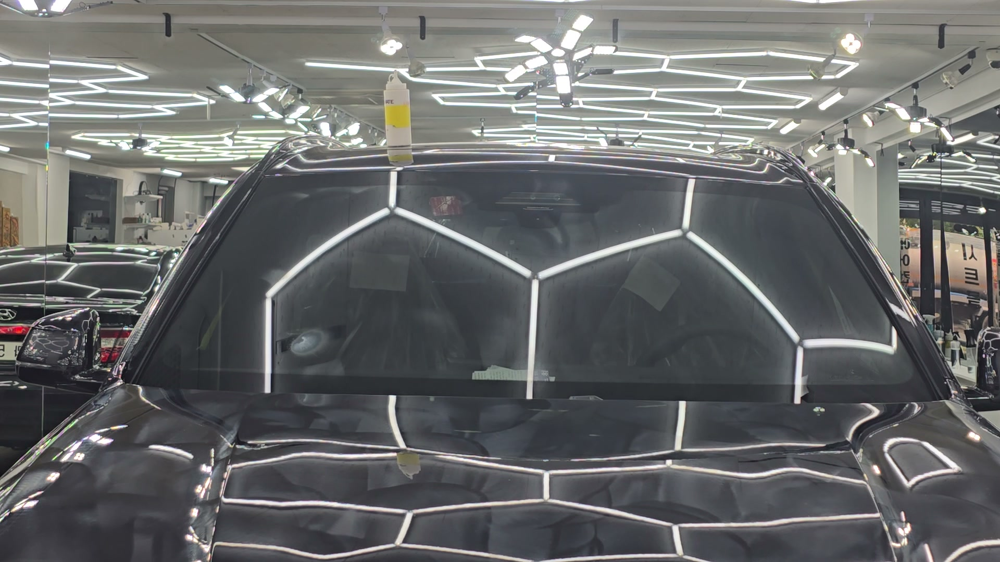

BMW X5 검정입니다. 앞유리 부산 유막제거로 들어왔습니다.
이 작업은 얼마나 세게 갈았느냐의 문제가 아닙니다. 몇 번 확인했느냐의 문제입니다.

같은 유리, 같은 순간입니다. 위는 걷어낸 뒤, 아래는 아직입니다
마른 유리로는 판단이 안 된다
유막은 마른 상태에서 보이지 않습니다.
매장 조명이 유리에 선명하게 비치고 있어도 아무 문제 없어 보입니다. 차주분들이 모르고 타시는 이유가 여기 있습니다. 비 오는 날 밤에 시야가 뿌예지고 나서야 이상하다고 느끼십니다. 유막을 보려면 물을 묻혀야 합니다.
젖은 수건이 지나가면 유막이 드러납니다 — 실제 작업 영상
물이 노는 방식으로 읽는다
유리는 원래 물과 친한 재질입니다. 깨끗한 유리에 물이 닿으면 얇고 고르게 퍼집니다.
그런데 유막은 기름입니다. 기름 위에서는 물이 퍼지지 못하고 밀려나면서 알갱이로 뭉칩니다. 물방울이 맺힌다는 건 그 자리에 기름이 남아 있다는 뜻입니다. 그래서 부산 유막제거 작업에서는 눈이 아니라 물을 기준으로 판단합니다.

조명 선 가장자리가 물방울 때문에 거칠게 보입니다. 이게 유막입니다
구역을 나눠서 간다
앞유리 전체를 한 번에 문지르지 않습니다.
몇 구역으로 나눠 한 구역씩 끝내고 넘어갑니다. 전체를 한꺼번에 처리하면 어디를 했는지 몰라서 반드시 빠지는 자리가 생기고, 그 자리는 나중에 비 올 때 드러납니다.

손으로는 균일하게 안 된다
앞유리는 넓습니다. 사람 손으로 그 넓이를 같은 압력으로 문지르는 건 불가능합니다.
힘을 준 자리만 벗겨지고 나머지는 남습니다. 셀프로 하셨는데 뭔가 개운치 않으셨다면 대개 이 상태입니다. 듀얼 폴리셔로 일정한 회전수와 압력을 유지하며 전면을 고르게 처리해야 합니다.

기술자의 팁
한 구역을 갈고 나면 반드시 젖은 수건으로 닦아 확인합니다. 물이 고르게 밀리면 그 구역은 끝난 겁니다. 한 자리라도 알갱이가 맺히면 거기만 다시 갑니다. 이걸 얼룩이 안 나올 때까지 반복합니다. 눈으로 안 보이는 걸 감으로 끝낼 수는 없습니다.
다 끝나면 이렇게 된다
물이 유리 전면에 고르게 퍼지고, 알갱이가 한 곳도 맺히지 않습니다.
매장 육각 조명이 왜곡 없이 선명하게 맺힙니다. 유리가 원래 이런 물건이었습니다.

왜 유막을 걷어내야 하는가
미관 문제가 아니라 안전 문제입니다.
유막이 있으면 빗물이 고르지 않게 퍼지고, 그 울퉁불퉁한 물막에 빛이 부딪히면 한 방향으로 반사되지 않고 사방으로 흩어집니다. 마주 오는 헤드라이트와 가로등이 번져 유리 전체가 하얗게 뜹니다.
여기서 대부분 와이퍼를 켜십니다. 그런데 와이퍼로는 안 없어집니다. 유막은 빗물이 아니라 유리에 붙어 있기 때문입니다. 오히려 뭉쳐 있던 기름이 와이퍼에 밀려 전면에 펴 발리면서 더 안 보이게 됩니다.
마지막은 발수까지
유막을 걷어낸 유리는 아무것도 없는 맨살입니다.
이대로 내보내면 다음 비부터 또 오염이 유리에 직접 앉습니다. 제거한 자리에 발수 코팅을 올려야 유막이 다시 앉을 확률이 현저히 낮아집니다. 빗물이 구슬처럼 뭉쳐 흘러내리면서 오염물을 같이 데리고 내려가기 때문입니다.
다만 미리 말씀드릴 것이 하나 있습니다. 발수 코팅 뒤 오토 와이퍼를 계속 켜두시면 와이퍼가 떨릴 수 있습니다. 비가 약하거나 유리가 마른 상태에서 고무가 미끄러지다 걸리기를 반복하기 때문입니다. 고장이 아니니, 비가 약할 때는 오토를 끄고 필요할 때만 쓰시면 됩니다.
시공증명서를 함께 드립니다
모든 시공 차량에 시공증명서를 드립니다.
차종·시공일·코팅제 시리얼 번호가 적혀 있고, 홈페이지에 등록해 보증을 받으실 수 있습니다.
자주 묻는 질문
Q. 앞유리에 유막이 있는지 어떻게 확인하나요?
A. 물에 적신 수건으로 한 번 쓸어보십시오. 물이 고르게 밀리면 없는 것이고, 줄이 남거나 얼룩덜룩 뭉치면 유막입니다. 세차 후에 하시면 더 정확합니다.
Q. 유막제거는 왜 손이 아니라 기계로 하나요?
A. 앞유리는 넓어서 손으로는 균일한 압력이 안 나옵니다. 힘을 준 자리만 벗겨지고 나머지는 남아 얼룩이 됩니다. 폴리셔로 회전수와 압력을 유지해야 고르게 끝납니다.
Q. 유막제거만 하면 되나요, 발수코팅도 해야 하나요?
A. 걷어낸 유리는 맨살이라 그대로 두면 다음 비부터 오염이 다시 앉습니다. 발수 코팅을 올리면 유막이 다시 앉을 확률이 현저히 낮아지고 비 오는 날 시야도 확보됩니다.
Q. 발수코팅 후 와이퍼가 떨리는 건 왜 그런가요?
A. 발수막 위에서 고무가 미끄러지다 걸리기를 반복해서 나는 현상입니다. 고장이 아닙니다. 비가 약할 때는 오토 와이퍼를 끄고 필요할 때만 쓰시면 됩니다.
Q. 쉴드광택 위치와 예약은 어떻게 하나요?
A. 부산 남구 유엔로220 1F 쉴드광택입니다. 예약·상담은 010-3384-1850, 대표 최한중이 직접 상담하고 책임 시공합니다.
눈으로 안 보이는 걸 감으로 끝내지 않습니다. 닦으면서 확인하고, 확인하면서 닦습니다.
제품을 직접 만드는 사람이 직접 시공합니다.
부산에서 유막제거·유리막코팅을 고민 중이시면 편하게 연락 주십시오.
어떤 차를 타냐보다 어떻게 타냐가 중요합니다~!
시공 중에는 전화를 받지 못할 때가 많습니다.
카카오톡으로 차종과 원하시는 시공을 남겨주시면 확인 후 답변드립니다.
쉴드광택 · 부산 남구 유엔로220 1F · 대표 최한중